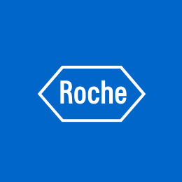

|
Qualcomm
June 2021 - August 2021
Interim Engineering Intern,
San Diego, CA
QCT Windows Platform Software Development
|
|
|
Amazon Web Services
May 2019 - August 2019
Software Development Engineer Intern,
Austin, TX
Annapurna Labs: F1 (FPGA Acceleration) Instances Software
|
|
|
Case Western Reserve University
August 2018 - May 2019
Undergraduate Teaching Assistant,
Cleveland, OH
January 2019 - May 2019
EECS 338: Introduction to Operating Systems and Concurrent Programming
Undergraduate Laboratory Teaching Assistant,
Cleveland, OH
August 2018 - December 2018
EECS 301: Digital Logic Laboratory
|
|
|  |
Roche Sequencing Solutions
May 2017 - August 2017
System Development Intern,
Pleasanton, CA
|
| Programming | Java, C#, C, Python (Pandas, NumPy, PyTorch), R (working proficiency), SQL (MySQL, MS SQL Server) and NoSQL (MongoDB, HBase), Verilog (working proficiency), Assembly (working proficiency), Git, Linux, AWS and Azure and GCP (working proficiency) |
| Web | HTML, CSS, JavaScript, PHP |
| Graphic Arts | Photoshop, Final Cut Pro, Unity |
| Language | English (native), Chinese [Mandarin (professional), Cantonese (fluent)] |